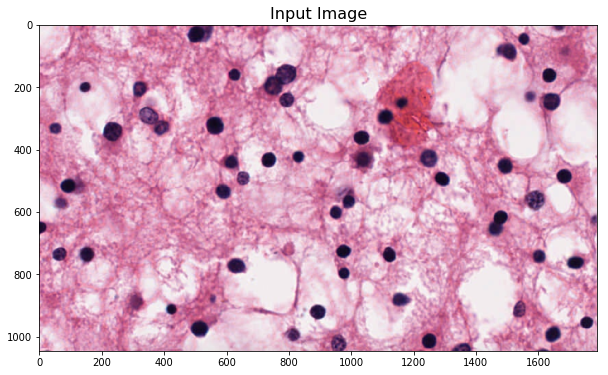
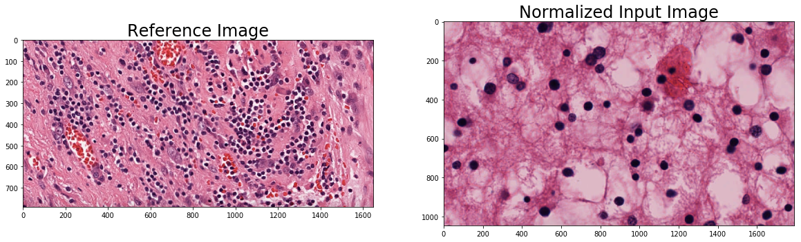
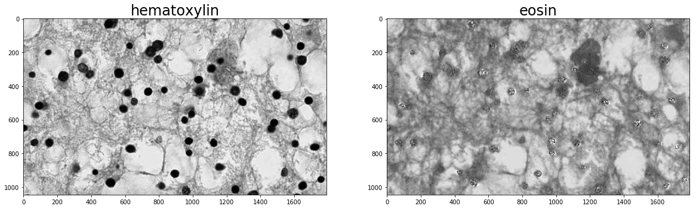
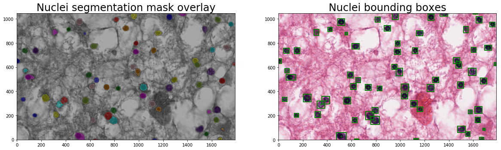

Nuclei Segmentation¶
[1]:
import histomicstk as htk
import numpy as np
import scipy as sp
import skimage.io
import skimage.measure
import skimage.color
import matplotlib.pyplot as plt
import matplotlib.patches as mpatches
%matplotlib inline
#Some nice default configuration for plots
plt.rcParams['figure.figsize'] = 10, 10
plt.rcParams['image.cmap'] = 'gray'
titlesize = 24
INFO:root:Created LRU Cache for 'tilesource' with 4011 maximum size
INFO:root:Notice: Could not import MapnikTileSource
Load input image¶
[2]:
input_image_file = ('https://data.kitware.com/api/v1/file/'
'576ad39b8d777f1ecd6702f2/download') # Easy1.png
im_input = skimage.io.imread(input_image_file)[:, :, :3]
plt.imshow(im_input)
_ = plt.title('Input Image', fontsize=16)

Perform color normalization¶
[4]:
# Load reference image for normalization
ref_image_file = ('https://data.kitware.com/api/v1/file/'
'57718cc28d777f1ecd8a883c/download') # L1.png
im_reference = skimage.io.imread(ref_image_file)[:, :, :3]
# get mean and stddev of reference image in lab space
mean_ref, std_ref = htk.preprocessing.color_conversion.lab_mean_std(im_reference)
# perform reinhard color normalization
im_nmzd = htk.preprocessing.color_normalization.reinhard(im_input, mean_ref, std_ref)
# Display results
plt.figure(figsize=(20, 10))
plt.subplot(1, 2, 1)
plt.imshow(im_reference)
_ = plt.title('Reference Image', fontsize=titlesize)
plt.subplot(1, 2, 2)
plt.imshow(im_nmzd)
_ = plt.title('Normalized Input Image', fontsize=titlesize)

Perform color deconvolution¶
[5]:
# create stain to color map
stainColorMap = {
'hematoxylin': [0.65, 0.70, 0.29],
'eosin': [0.07, 0.99, 0.11],
'dab': [0.27, 0.57, 0.78],
'null': [0.0, 0.0, 0.0],
}
# specify stains of input image
stain_1 = 'hematoxylin' # nuclei stain
stain_2 = 'eosin' # cytoplasm stain
stain_3 = 'null' # set to null of input contains only two stains
# create stain matrix
W = np.array([stainColorMap[stain_1],
stainColorMap[stain_2],
stainColorMap[stain_3]]).T
# perform standard color deconvolution
im_stains = htk.preprocessing.color_deconvolution.color_deconvolution(im_nmzd, W).Stains
# Display results
plt.figure(figsize=(20, 10))
plt.subplot(1, 2, 1)
plt.imshow(im_stains[:, :, 0])
plt.title(stain_1, fontsize=titlesize)
plt.subplot(1, 2, 2)
plt.imshow(im_stains[:, :, 1])
_ = plt.title(stain_2, fontsize=titlesize)

Segment Nuclei¶
[8]:
# get nuclei/hematoxylin channel
im_nuclei_stain = im_stains[:, :, 0]
# segment foreground
foreground_threshold = 60
im_fgnd_mask = sp.ndimage.morphology.binary_fill_holes(
im_nuclei_stain < foreground_threshold)
# run adaptive multi-scale LoG filter
min_radius = 10
max_radius = 15
im_log_max, im_sigma_max = htk.filters.shape.cdog(
im_nuclei_stain, im_fgnd_mask,
sigma_min=min_radius * np.sqrt(2),
sigma_max=max_radius * np.sqrt(2),
)
# detect and segment nuclei using local maximum clustering
local_max_search_radius = 10
im_nuclei_seg_mask, seeds, maxima = htk.segmentation.nuclear.max_clustering(
im_log_max, im_fgnd_mask, local_max_search_radius)
# filter out small objects
min_nucleus_area = 80
im_nuclei_seg_mask = htk.segmentation.label.area_open(
im_nuclei_seg_mask, min_nucleus_area).astype(np.int)
# compute nuclei properties
objProps = skimage.measure.regionprops(im_nuclei_seg_mask)
print 'Number of nuclei = ', len(objProps)
# Display results
plt.figure(figsize=(20, 10))
plt.subplot(1, 2, 1)
plt.imshow(skimage.color.label2rgb(im_nuclei_seg_mask, im_input, bg_label=0), origin='lower')
plt.title('Nuclei segmentation mask overlay', fontsize=titlesize)
plt.subplot(1, 2, 2)
plt.imshow( im_input )
plt.xlim([0, im_input.shape[1]])
plt.ylim([0, im_input.shape[0]])
plt.title('Nuclei bounding boxes', fontsize=titlesize)
for i in range(len(objProps)):
c = [objProps[i].centroid[1], objProps[i].centroid[0], 0]
width = objProps[i].bbox[3] - objProps[i].bbox[1] + 1
height = objProps[i].bbox[2] - objProps[i].bbox[0] + 1
cur_bbox = {
'type': 'rectangle',
'center': c,
'width': width,
'height': height,
}
plt.plot(c[0], c[1], 'g+')
mrect = mpatches.Rectangle([c[0] - 0.5 * width, c[1] - 0.5 * height] ,
width, height, fill=False, ec='g', linewidth=2)
plt.gca().add_patch(mrect)
Number of nuclei = 65

[ ]: